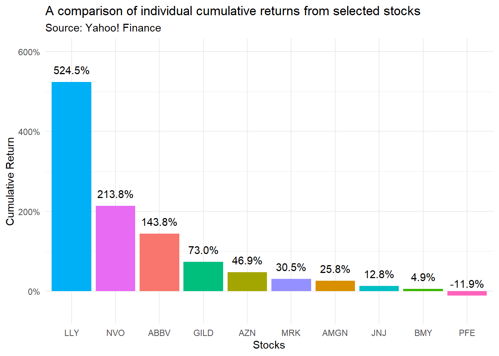
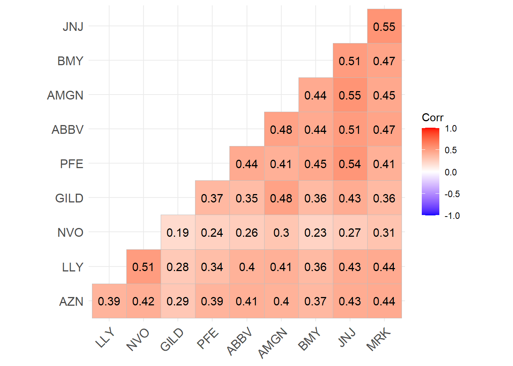

# Package names
packages <- c("tidyverse","tidyquant","tidymodels","xts", "glue","scales", "ggthemes","ggcorrplot")
# Install packages not yet installed
installed_packages <- packages %in% rownames(installed.packages())
if (any(installed_packages == FALSE)) {
install.packages(packages[!installed_packages])
}
# Load all packages
invisible(lapply(packages, library, character.only = TRUE))Data Case I - Investing in the Pharmaceutical Industry
About
This Data Case is part of the Practical Applications in Quantitative Finance course, held at FGV-EAESP’s undergraduate course in business. Carefully follow the instructions contained in the data case as well as eClass® before you make your submission.
Case Outline
The pharmaceutical industry is a critical sector in financial markets, influenced by regulatory approvals, drug developments, and global health events. In this first Data Case, you will analyze stock performance for a set of 10 pharmaceutical companies over time, applying the tidyverse and tidyquant packages to extract and interpret insights from the data.
You are a junior analyst at Atlas Capital, a leading buyside investment firm specializing in sector-focused strategies. The firm is considering increasing its exposure to the pharmaceutical industry, given its long-term growth potential and resilience in volatile markets. In the latest investment committee meeting, your fund manager raised an important question: “How has the pharmaceutical industry performed over time? We need to identify whether now is the right time to increase our position.”
Your team has been tasked with conducting an in-depth financial analysis of the pharmaceutical sector. The goal is to assess industry-wide trends, identify risks and opportunities, and ultimately recommend an investment stance. More specifically, your task will involve:
- Collecting stock price data and compute returns
- Visualizing key trends in returns and volatility
- Interpreting findings and suggest investment insights
To streamline our research, you will focus on the 10 largest publicly traded pharmaceutical companies in the U.S, analyze their performance, risks, and potential catalysts that could drive returns in the near future. As of February 2025, the 10 largest pharmaceutical companies traded in the U.S., along with their ticker symbols, are:
- Eli Lilly and Co. (LLY): A leading pharmaceutical company known for its innovative treatments in diabetes and oncology.
- Novo Nordisk A/S (NVO): Specializing in diabetes care, Novo Nordisk has a significant presence in the U.S. market.
- Johnson & Johnson (JNJ): A diversified healthcare company with a strong pharmaceutical division.
- AbbVie Inc. (ABBV): Known for its immunology and oncology products, AbbVie is a major player in the pharmaceutical industry.
- Merck & Co., Inc. (MRK): Merck offers a wide range of prescription medicines, vaccines, and therapies.
- Pfizer Inc. (PFE): A global pharmaceutical corporation recognized for its vaccines and therapeutics.
- Bristol-Myers Squibb Company (BMY): Focused on oncology, cardiovascular, and immunology, Bristol-Myers Squibb is a key industry player.
- AstraZeneca PLC (AZN): A biopharmaceutical company with a strong portfolio in oncology and respiratory diseases.
- Amgen Inc. (AMGN): Specializing in biotechnology, Amgen develops therapies for serious illnesses.
- Gilead Sciences, Inc. (GILD): Known for its antiviral drugs, Gilead has a significant market presence.
Now, it’s up to you and your team to dive into the data, extract key insights, and present your data-driven investment thesis. Good luck—your next career milestone at Atlas Capital depends on it. 🚀
Deliverable
Each group is expected to deliver a single assignment. A submission must be either an .R script or a .qmd (Quarto) file, ensuring that both code and interpretations of the results are clearly presented. Whenever applicable, include concise explanations alongside your code to demonstrate your understanding of the analysis. The due date for this submission is specified on eClass®, so please check the platform for details. You are required to clearly document your workflow and assumptions, and provide meaningful explanations alongside your outputs.
To help you structure your submission, I have provided a Quarto mock template, which is already available for you to use. This template is designed to help you seamlessly integrate your code and analysis, ensuring a clear and organized presentation of your work. Feel free to use it as a starting point to format your responses effectively. The mock template can be found in the Data Cases folder on eClass®.
Tech-setup
Before you start, make sure that you have your R session correctly configured with all the following packages by running the code below:
Alternatively, you can simply call:
#Install if not already available
install.packages('tidyverse')
install.packages('tidyquant')
install.packages('glue')
install.packages('scales')
install.packages('ggthemes')
#Load
library(tidyverse)
library(tidyquant)
library(tidymodels)
library(glue)
library(scales)
library(ggthemes)Exercise 1
Use the tq_get() function from the tidyquant package to retrieve historical adjusted closing prices for the 10 largest publicly traded pharmaceutical companies in the U.S. from Yahoo! Finance. Your dataset should cover the period from January 1, 2020, to December 31, 2024. Using the functions from the tidyverse, ensure that your data includes only the timestamp column, as well as the column that contains the daily adjusted stock price information. Store this into an object called financial_data (or something similar). Store this data set for all the subsequent analysis - make sure not to override this dataset as you move along the data case to make sure you are always referring to the raw data pull!
#Define the list of assets
assets <- c('LLY','NVO','JNJ','ABBV','MRK','PFE','BMY','AZN','AMGN','GILD')
start_date <- '2020-01-01'
end_date <- '2024-12-31'
financial_data=assets%>%
tq_get(from=start_date,
to= end_date)%>%
select(date,symbol,adjusted)Exercise 2
Using the tidyquant package, use the object you’ve just created with the tq_transmute function to compute the yearly returns for each stock over the analysis period. More specifically, pass the yearlyReturn function to adjusted column using the tq_transmute, labeling this new variable as yearly_return. Arrange your dataset by year and in descending order of yearly_return (highest-to-lowest). Store this into a new object called, for example, yearly_returns. Which stock had the highest return in 2024, and which one had the lowest? Prompt the results in your session.
yearly_returns=financial_data%>%
group_by(symbol)%>%
tq_transmute(select = adjusted,
mutate_fun = yearlyReturn,
col_rename = 'yearly_return')%>%
arrange(year(date),desc(yearly_return))
#Full analysis
yearly_returns# A tibble: 50 × 3
# Groups: symbol [10]
symbol date yearly_return
<chr> <date> <dbl>
1 LLY 2020-12-31 0.303
2 ABBV 2020-12-31 0.263
3 NVO 2020-12-31 0.206
4 JNJ 2020-12-31 0.107
5 PFE 2020-12-31 0.0317
6 AZN 2020-12-31 0.0204
7 BMY 2020-12-31 0.0104
8 AMGN 2020-12-31 -0.0159
9 GILD 2020-12-31 -0.0706
10 MRK 2020-12-31 -0.0830
# ℹ 40 more rows#Best and worst performance
yearly_returns%>%
#Ungroup the data to make sure calculations are done rowwise
ungroup()%>%
#Select only the last year
filter(year(date)==2024)%>%
#Select only the 1st and 10th
filter(rank(yearly_return) %in% c(1,10))# A tibble: 2 × 3
symbol date yearly_return
<chr> <date> <dbl>
1 LLY 2024-12-30 0.336
2 NVO 2024-12-30 -0.162Exercise 3
With your data.frame containing the yearly returns over time for each stock, use ggplot to create a line chart of the historical cumulative returns for each stock during the study period. Which stock had the highest cumulative return up-to-date? Recall that cumulative returns can be calculated from period returns as:
\[ \text{Cumulative Return}= (1+R_1)\times(1+R_2)\times ... \times(1+R_T)-1\equiv \prod (1+R_t)-1 \]
Your chart should map date to the x-axis, the yearly return variable to the y axis, and group the results by symbol. To make sure that you are plotting a line chart, use the geom_line() function after you have mapped your data. In addition to these two layers, add any customizations that you believe that are beneficial to convey the message - see the Data Visualization
Hint
- With the
data.frameyou created to store yearly returns, group bysymbol, and usetq_transmute()to apply theReturn.cumulativefunction to the data. - Now, your resulting
data.framecontains the cumulative returns for all stocks. You can adjust the column names with thesetNames()function and pipe that into aggplotcall, mapping thesymbolto the x-axis, the cumulative return column to the y-axis, and thegeom_col()function to create a bar chart. Add as many customizations you think are worth the effort.
yearly_returns%>%
group_by(symbol)%>%
tq_transmute(select = yearly_return,
mutate_fun = Return.cumulative)%>%
setNames(c('symbol','cum_returns'))%>%
ggplot(aes(x=reorder(symbol,desc(cum_returns)),y=cum_returns,fill=symbol))+
geom_col()+
geom_text(aes(label=percent(cum_returns),vjust=-1))+
theme_minimal()+
labs(x='Stocks',
y='Cumulative Return',
title='A comparison of individual cumulative returns from selected stocks',
subtitle = 'Source: Yahoo! Finance')+
scale_y_continuous(labels=percent,limits = c(-0.5,6))+
theme(legend.position = 'none')
Exercise 4
After reviewing your initial analysis, your fund manager at Atlas Capital liked the idea of examining yearly returns to get a broader perspective on performance. However, they pointed out that pharmaceutical companies vary significantly in terms of risk exposure, so it’s crucial to account for volatility as well. To complement the analysis, use the same rationale from the previous exercise to calculate the yearly volatility for each stock. How do the risk levels differ between firms? Store your results in a new object and prompt it in your session.
Hint
As opposed to the yearlyReturn function, the tidyquant package does not have a pre-built dailyStdev function. Instead, what you can do is to use a combination of functions to get the expected result:
- First, use
tq_transmute()to calculate daily returns passing thedailyReturnfunction - Now, your resulting
data.framecontains daily returns for all stocks. It is now in a convenient format to chain this object again, in anothertq_transmute()function, applying theStdDev.annualizedfunction and assign to a new object, likeyearly_volatility. Note, however, that if you simply useStdDev.annualized, it will calculate an annualized metric for each stock for the whole period, which is not what you want.
To make sure that you have calculating the annualized standard deviation for each year, you can do a composition of apply.yearly, which applies a given function at yearly intervals, and StdDev.annualized, using the following syntax:
your_daily_return_object%>%
tq_transmute(select = daily_return,
mutate_fun = apply.yearly,
FUN=StdDev.annualized,
col_rename = 'yearly_volatility')Here, tq_transmute() will apply the function defined in FUN over each interval.
yearly_volatility=financial_data%>%
group_by(symbol)%>%
tq_transmute(select = adjusted,
mutate_fun = dailyReturn,
col_rename = 'daily_return')%>%
tq_transmute(select = daily_return,
mutate_fun = apply.yearly,
FUN=StdDev.annualized,
col_rename = 'yearly_volatility')
#Full analysis
yearly_volatility# A tibble: 50 × 3
# Groups: symbol [10]
symbol date yearly_volatility
<chr> <date> <dbl>
1 LLY 2020-12-31 0.426
2 LLY 2021-12-31 0.317
3 LLY 2022-12-30 0.273
4 LLY 2023-12-29 0.288
5 LLY 2024-12-30 0.303
6 NVO 2020-12-31 0.315
7 NVO 2021-12-31 0.244
8 NVO 2022-12-30 0.325
9 NVO 2023-12-29 0.306
10 NVO 2024-12-30 0.357
# ℹ 40 more rows#Best and worst performance
yearly_volatility%>%
#Ungroup the data to make sure calculations are done rowwise
ungroup()%>%
#Select only the last year
filter(year(date)==2024)%>%
#Select only the 1st and 10th
filter(rank(yearly_volatility) %in% c(1,10))# A tibble: 2 × 3
symbol date yearly_volatility
<chr> <date> <dbl>
1 NVO 2024-12-30 0.357
2 JNJ 2024-12-30 0.151Exercise 5
Building on your previous findings, since some companies exhibit higher returns but also greater risk, it might be a good idea to add a risk-adjusted performance metric to the analysis. The Sharpe ratio for stock \(i\) in period \(t\) measures the risk-adjusted return of an asset and is calculated as:
\[ \text{Sharpe Ratio}_{i,t}=\dfrac{R_{i,t}-R_{f,t}}{\sigma_{i,t}}, \]
where \(R_{i,t}\) is the return of a given stock \(i\) in period \(t\), \(R_{f,t}\) is the risk-free return for the same period, and \(\sigma_{i,t}\) is the volatility for stock \(i\) in period \(t\).
Your task is to calculate the Sharpe Ratio for each pharmaceutical stock using yearly returns and yearly volatility. To simplify your calculations, assume a risk-free rate of \(0\%\) per year (i.e, no risk-free premium). Compare the Sharpe ratios across companies. Do the highest-return stocks also have the best risk-adjusted performance? Are there any stocks that stand out as particularly efficient in generating returns relative to their risk? Are there companies that deliver strong returns but with disproportionately high volatility?
Hint
There are two ways you can use to create the Sharpe Ratio:
Using the previously created
yearly_returnsandyearly_volatilityobjects, use theleft_join()function to merge them based on a common set of identifiers (in this case,dateandsymbol). After that, manipulate the resultingdata.framewithmutateto generate the Sharpe Ratio.Using
tq_transmutein a very similar fashion to what you have done to calculate the yearly volatility, but now passing the theSharpeRatio.annualizedfunction with argumentsRf=0andscale=252.
Although both approaches should yield similar results, potential differences might stem from rounding.
#Option 1
yearly_sharpe_1=financial_data%>%
group_by(symbol)%>%
tq_transmute(select = adjusted,
mutate_fun = dailyReturn,
col_rename = 'daily_return')%>%
tq_transmute(select = daily_return,
mutate_fun = apply.yearly,
FUN=SharpeRatio.annualized,
Rf=0,
scale=252,
col_rename = 'yearly_sharpe')
#Option 2
yearly_sharpe_2=yearly_returns%>%
left_join(yearly_volatility)%>%
group_by(symbol)%>%
mutate(yearly_sharpe=yearly_return/yearly_volatility)
yearly_sharpe_1# A tibble: 50 × 3
# Groups: symbol [10]
symbol date yearly_sharpe
<chr> <date> <dbl>
1 LLY 2020-12-31 0.708
2 LLY 2021-12-31 2.09
3 LLY 2022-12-30 1.26
4 LLY 2023-12-29 2.13
5 LLY 2024-12-30 1.11
6 NVO 2020-12-31 0.652
7 NVO 2021-12-31 2.60
8 NVO 2022-12-30 0.701
9 NVO 2023-12-29 1.81
10 NVO 2024-12-30 -0.456
# ℹ 40 more rowsyearly_sharpe_2# A tibble: 50 × 5
# Groups: symbol [10]
symbol date yearly_return yearly_volatility yearly_sharpe
<chr> <date> <dbl> <dbl> <dbl>
1 LLY 2020-12-31 0.303 0.426 0.711
2 ABBV 2020-12-31 0.263 0.349 0.754
3 NVO 2020-12-31 0.206 0.315 0.654
4 JNJ 2020-12-31 0.107 0.303 0.355
5 PFE 2020-12-31 0.0317 0.357 0.0889
6 AZN 2020-12-31 0.0204 0.360 0.0566
7 BMY 2020-12-31 0.0104 0.296 0.0352
8 AMGN 2020-12-31 -0.0159 0.383 -0.0416
9 GILD 2020-12-31 -0.0706 0.375 -0.188
10 MRK 2020-12-31 -0.0830 0.318 -0.261
# ℹ 40 more rowsExercise 6
Way to go! As you delve deeper into your investment analysis, your fund manager emphasizes the importance of understanding how different pharmaceutical stocks interact with one another over time. To gain insights into the relationships between these companies, your next task is to calculate the correlation of daily stock returns for the selected pharmaceutical companies for the analysis period.
Hint
- First, start by calculating the daily returns for each stock. You can use the
tq_transmutefunction into your dataset and apply thedailyReturnfunction. - After that, you need to pivot your data in such a way that each column is a specific ticker with information on daily returns. You can do that by calling
pivot_wider(names_from='symbol',values_from='daily_return'), assuming that your daily return variable is calleddaily_return. - With that, you’ll achieve a data frame that now has \(11\) columns, namely, the
dateand the \(10\) individual ticker columns with daily return information. - To make sure that you are calculating the correlation using a \(10\times10\) matrix, use
select(-date)to get rid of the date column and pipe that intocor(), which calculates the correlation across all pairs of variables within adata.frame, and outputs a correlation matrix.
If you want, you can pipe the result into ggcorplot(), a function from the ggcorplot package that provides meaningful visualizations of correlation matrices.
corr_returns=financial_data%>%
group_by(symbol)%>%
tq_transmute(select = adjusted,
mutate_fun = dailyReturn,
col_rename = 'daily_return')%>%
pivot_wider(names_from='symbol',values_from = 'daily_return')%>%
select(-date)%>%
cor()
corr_returns%>%ggcorrplot(hc.order = TRUE, type = "lower",lab = TRUE)
Exercise 7
Based on your analysis of the correlation between each stock, it seems that these pharmaceutical firms are relatively trending together. Notwithstanding, there might be gains from diversification if instead of choosing a specific firm, we decide to hold a portfolio of pharmaceutical stocks.
Investing in a single stock exposes an investor to company-specific (idiosyncratic) risk, such as lawsuits, failed drug trials, or regulatory changes. However, constructing a diversified portfolio of multiple stocks within the same industry can help smooth out these risks while still capturing the overall sector trends. For instance, while one pharmaceutical company may experience a stock price drop due to a failed drug trial, another might gain due to a successful FDA approval. By equally weighting multiple stocks, investors can reduce the impact of any single company’s negative performance while still benefiting from the broader industry’s growth.
Your manager liked your idea and wanted to test it out by creating an equally-weighted portfolio of all pharmaceutical companies over time. Using the tq_transmute() function, create an object, portfolio_returns, that contains the yearly returns of a portfolio that assigns equal weights - in this case, 10% - on each stock, and compare that to the yearly returns of the S&P 500 Index. Would the fund manager be better-off by investing in the portfolio relative to the S&P500?
Hint
- First, start by calculating the yearly returns for each stock using the
tq_transmute()function as before, grouping the data bysymboland creating a new variable,yearly_return. - Knowing that you have an equally-weighted portfolio, group your data my
dateand pipe the result into asummarize()function to create a new variable,portfolio_returnas the average across all stocks. Assign this result to an object calledportfolio_returns - Fetch S&P 500 data using a similar call to
tq_get()like you did in the beginning of the exercise, but now collecting data for^GSPC. Calculate the yearly returns and assign to a new variable,index_return. Store the result in anotherdata.frame,index_returns. - Merge both datasets using
left_join().
portfolio_returns=financial_data%>%
group_by(symbol)%>%
tq_transmute(select = adjusted,
mutate_fun = yearlyReturn,
col_rename = 'yearly_return')%>%
group_by(date)%>%
summarize(portfolio_return=mean(yearly_return,na.rm=TRUE))
index_returns=tq_get('^GSPC',from=start_date,to=end_date)%>%
tq_transmute(select = adjusted,
mutate_fun = yearlyReturn,
col_rename = 'index_return')
left_join(portfolio_returns,index_returns)Joining with `by = join_by(date)`# A tibble: 5 × 3
date portfolio_return index_return
<date> <dbl> <dbl>
1 2020-12-31 0.0772 0.153
2 2021-12-31 0.295 0.269
3 2022-12-30 0.208 -0.194
4 2023-12-29 0.0534 0.242
5 2024-12-30 0.0449 0.238Exercise 8
After analyzing the equally weighted pharmaceutical portfolio, the fund manager was impressed with the performance results. However, they remain skeptical about whether the portfolio truly provides better risk-adjusted returns compared to simply picking one of the best-performing stocks in the industry.
As final step, your job is to prove whether the portfolio offers superior risk-adjusted returns by computing the Sharpe Ratio for both the portfolio and its individual stocks in 2024. If the portfolio has a higher Sharpe ratio, it means that diversification helps maximize returns while controlling for risk — an essential argument when managing institutional funds.
In order to do that, your task is to provide a visualization of the Sharpe Ratio of the equally-weighted portfolio you’ve just created and compare that to those of the individual stocks. I have already created the portfolio results for you, so you can copy-paste that to your session:
portfolio_sharpe=data.frame(symbol='Portfolio',
yearly_return=0.03705213,
yearly_volatility=0.1223983)
Hint
- Create the
portfolio_sharpein your session using the code chunk above. - Using the
yearly_returnsobject you’ve created in Exercise 2, filter byyear(date)==2024andleft_join()with theyearly_volatilityobject you have created in Exercise 3, assigning the result to a new object - Finally, bind
portfolio_sharpeto the resultingdata.framein a rowwise manner usingrbind(dataframe1,dataframe2) - Finally, call
ggplot()and adjust the aesthetics to show the relationship between risk (x-axis) and return (y-axis) for all individual stocks and the portfolio.
#Individual Stocks
individual_sharpe_2024=yearly_returns%>%
filter(year(date)==2024)%>%
left_join(yearly_volatility)
#Portfolio
portfolio_returns_2024=financial_data%>%
filter(year(date)==2024)%>%
group_by(symbol)%>%
tq_transmute(select = adjusted,
mutate_fun = dailyReturn,
col_rename = 'daily_return')%>%
group_by(date)%>%
summarize(daily_return=mean(daily_return,na.rm=TRUE))%>%as.xts()
portfolio_sharpe_2024=data.frame(symbol='Portfolio',
yearly_return=as.numeric(Return.annualized(portfolio_returns_2024)),
yearly_volatility=as.numeric(StdDev.annualized(portfolio_returns_2024)))
library(ggrepel)
individual_sharpe_2024%>%
rbind(portfolio_sharpe_2024)%>%
mutate(sharpe_ratio=yearly_return/yearly_volatility,
color=ifelse(symbol=='Portfolio','Portfolio','Individual Stocks'))%>%
ggplot(aes(y=yearly_return,x=yearly_volatility))+
geom_abline(slope = 0,intercept = 0,linetype='dashed')+
geom_point(aes(size=sharpe_ratio,color=color))+
geom_text_repel(aes(label=glue('{symbol}: {round(sharpe_ratio,2)}'),vjust=3),size=3)+
theme_minimal()+
labs(x='Yearly Volatility',
y='Yearly Return',
title='A comparison of individual returns and volatilities vis-a-vis portfolio results',
subtitle = 'Source: Yahoo! Finance')+
scale_y_continuous(labels=percent,limits = c(-0.5,0.5))+
scale_x_continuous(labels=percent)+
theme(legend.position = 'none')
Wrapping-up your analysis
Now that you have analyzed the Sharpe ratios of both individual pharmaceutical stocks and the equally weighted portfolio, take a step back and summarize your insights. Did the portfolio offer a better risk-adjusted return compared to individual stocks? If so, why? If not, what might explain the results?
Based on your findings, what would you recommend to the fund manager? Would you suggest investing in the diversified portfolio, or do certain individual stocks offer superior risk-adjusted returns? Would you propose an alternative weighting scheme, such as a market cap-weighted portfolio, to further improve performance?
Write a short conclusion summarizing your key takeaways and justify your investment recommendation using data-driven insights.